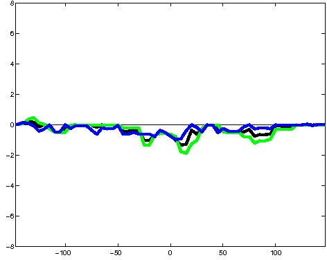
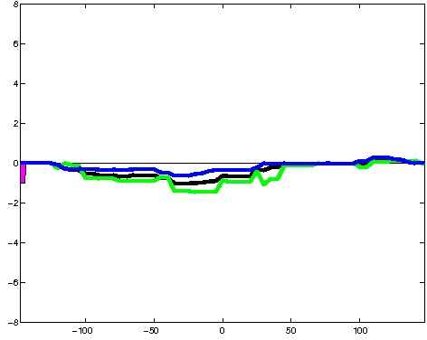
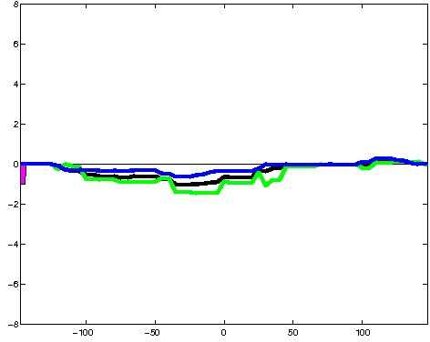
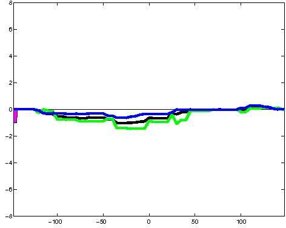

K562 Repressive DNase matched - State 23:Low (n=5)
K562 Repressive DNase matched - State 23:Low (n=5)
[
See group descriptions
]


; picked in K562 (state 23:Low, DNase); matched; chr2:20,413,909-20,414,203 (295bp)")
; picked in K562 (state 23:Low, DNase); matched; chr17:80,334,949-80,335,243 (295bp)") 
